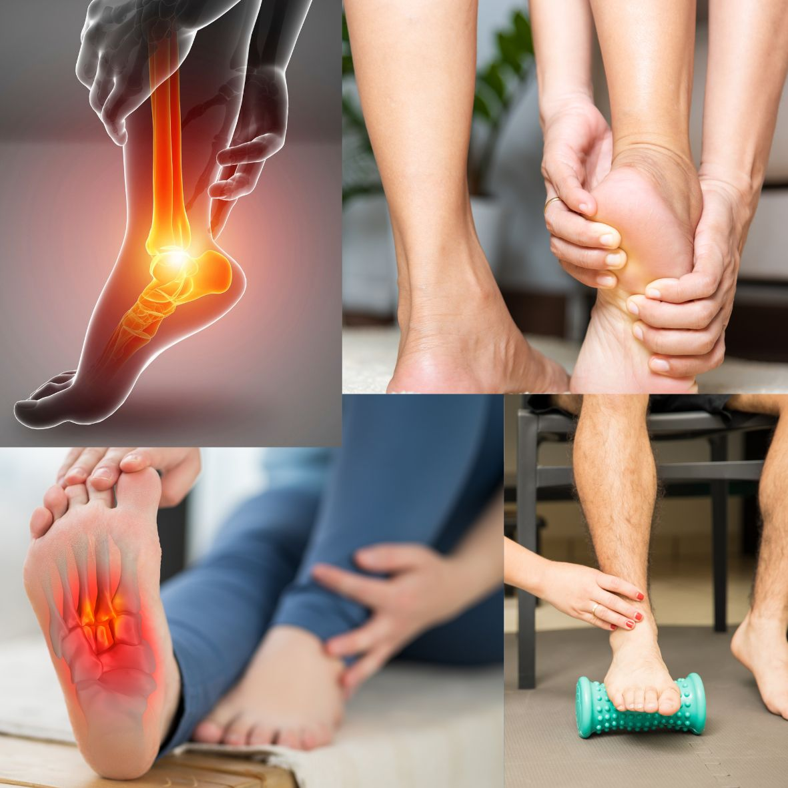

Une douleur au talon dès les premiers pas du matin ? La fasciite plantaire et l'épine calcanéenne expliquées
Redoutez-vous de poser le pied par terre en sortant du lit ? Votre talon donne-t-il l'impression d'avoir un caillou ou un clou dedans pendant les premiers pas, puis la douleur s'atténue, pour revenir après une longue journée debout ? On vous a dit que vous aviez “une épine calcanéenne” et qu'il faudrait vous opérer ? Il s'agit très probablement d'une fasciite plantaire, la cause la plus fréquente de douleur du talon. La bonne nouvelle : elle est rarement grave, et la plupart des personnes guérissent sans opération, même s'il faut de la patience.
Qu'est-ce que la fasciite plantaire et l'épine calcanéenne ?
Le fascia plantaire (ou aponévrose plantaire) est une bande de tissu épaisse et solide qui court sous le pied, de l'os du talon jusqu'à la base des orteils. Il soutient la voûte plantaire et agit comme un ressort à chaque pas ou à chaque foulée. Lorsqu'il est surchargé de façon répétée, la zone où il s'insère sur l'os du talon devient irritée et douloureuse. Les médecins pensent aujourd'hui qu'il s'agit davantage d'une usure et d'une surcharge du tissu que d'une simple “inflammation”, d'où les termes de fasciose plantaire ou, plus simplement, de talalgie plantaire (douleur du talon).
Une épine calcanéenne (ou “éperon du talon”) est une petite excroissance osseuse qui peut se former à l'endroit où le fascia s'insère sur l'os du talon. Elle apparaît à la radiographie, et c'est là que commence la confusion. L'épine n'est en général pas la cause de la douleur. Beaucoup de personnes qui ont une épine n'ont aucune douleur, et beaucoup de personnes ayant une fasciite plantaire typique n'ont pas d'épine. L'épine est le signe que la zone est sous tension depuis longtemps, et non une épine qui s'enfonce dans le talon.
Les signes d'alerte
- Une douleur vive, en coup de poignard, sous le talon aux premiers pas du matin ou après être resté assis un moment. C'est l'indice classique.
- Une douleur qui s'atténue après quelques minutes de marche, puis revient après de longues périodes debout ou de marche.
- Une sensibilité à la partie interne et antérieure du talon, là où le fascia s'insère. Appuyer à cet endroit reproduit la douleur.
- Une douleur plus forte pieds nus, sur les sols durs ou le carrelage, ou avec des chaussures plates à semelle fine et des tongs.
- Une douleur qui s'installe progressivement, souvent après un changement récent : davantage de marche, un nouveau travail debout, un nouveau sport ou une prise de poids.
- Le plus souvent un seul talon, parfois les deux.
Qui en souffre, et pourquoi ?
Il n'y a que rarement une cause unique. Plusieurs facteurs la rendent plus probable :
- L'âge, entre 40 et 60 ans. Le coussin graisseux sous le talon s'amincit et le tissu devient moins résistant.
- L'excès de poids. Une charge plus importante s'exerce sur le fascia à chaque pas.
- La station debout ou la marche prolongée, par exemple chez les infirmières, les enseignants, les ouvriers d'usine, les commerçants et les chauffeurs.
- Une augmentation brutale de l'activité, comme la reprise de la course à pied, un nouveau cours de sport ou une longue marche de pèlerinage.
- Des muscles du mollet et un tendon d'Achille raides, qui tirent sur le talon et limitent la mobilité de la cheville.
- Des pieds plats ou très creux, et des chaussures peu adaptées : tongs, baskets usées, chaussures à semelle dure, ou marche pieds nus sur le carrelage.
- La grossesse, en raison de la prise de poids et du relâchement des ligaments.
- Certaines maladies, comme les rhumatismes inflammatoires (voir la polyarthrite rhumatoïde) et, chez certaines personnes, le diabète.
Est-ce vraiment une fasciite plantaire ? Comment le diagnostic est posé
La fasciite plantaire est diagnostiquée surtout à partir de votre histoire et d'un examen : où se situe la douleur, ce que vous ressentez au lever, et ce que le médecin constate en appuyant sur le talon et en mobilisant la cheville et les orteils.
Les examens d'imagerie ne sont en général pas nécessaires pour poser le diagnostic. On y a recours lorsque le tableau n'est pas clair, que la douleur est importante ou qu'elle ne s'est pas améliorée après plusieurs mois :
- La radiographie. Utile pour écarter d'autres causes, elle peut montrer une épine calcanéenne. N'oubliez pas que l'épine ne confirme pas le diagnostic et ne prédit pas l'intensité de la douleur.
- L'échographie. Elle peut montrer un fascia plantaire épaissi et constitue un moyen simple de conforter le diagnostic.
- L'IRM. Réservée aux cas douteux, par exemple pour rechercher une fracture de fatigue.
- Des analyses de sang, lorsqu'une cause rhumatologique est suspectée : douleur aux deux talons, raideur matinale ou autres articulations gonflées.
Toutes les douleurs du talon ne sont pas une fasciite plantaire. Parmi les autres causes :
- Une fracture de fatigue de l'os du talon, surtout après une augmentation brutale de l'activité.
- Le syndrome du canal tarsien, où un nerf est comprimé derrière la cheville et provoque des brûlures, des fourmillements ou un engourdissement (voir les douleurs nerveuses expliquées).
- La tendinopathie d'Achille, avec une douleur à l'arrière du talon plutôt que dessous.
- Le syndrome du coussinet talonnier, avec une sensation de talon meurtri au milieu du talon.
- Un rhumatisme inflammatoire comme la spondylarthrite, qui peut enflammer les points d'insertion au niveau du talon.
- La goutte et, plus rarement, une infection ou une tumeur osseuse.
Combien de temps cela dure-t-il ?
La fasciite plantaire s'améliore en général en quelques mois, pas en quelques jours. Avec un traitement bien conduit, la plupart des personnes vont mieux en 6 à 12 mois, et la grande majorité guérit sans chirurgie. La raison la plus fréquente d'une évolution qui traîne est la reprise trop rapide de la même surcharge, ou l'abandon des exercices après quelques semaines, quand la douleur commence à s'atténuer.
Comment la traite-t-on ?
Le traitement se fait par étapes, en commençant par des mesures simples. Le repos complet n'est pas la solution : le but est de réduire la charge, puis de reconstruire la force et la souplesse du pied.
- Étirements et exercices. C'est la base du traitement. Les étirements réguliers du mollet et ceux qui ciblent le fascia plantaire lui-même (tirer les orteils vers le tibia) sont les mesures les mieux étayées. On y ajoute souvent des exercices de renforcement du pied et du mollet. Un kinésithérapeute peut vous guider.
- Réduire la charge pendant un temps. Limitez la station debout prolongée, la course et les sauts, puis reprenez progressivement. La natation et le vélo sont de bonnes alternatives.
- Des chaussures adaptées. Des chaussures à semelle amortissante, avec un soutien de la voûte plantaire et un talon légèrement surélevé. Évitez les tongs, les chaussures plates à semelle fine et la marche pieds nus sur sols durs, même à la maison.
- Talonnettes, semelles amortissantes ou orthèses. Elles peuvent réduire la douleur et agissent mieux en complément des étirements que seules.
- Une attelle de nuit. Elle maintient le pied doucement étiré pendant le sommeil et peut aider les douleurs tenaces et anciennes, bien que certaines personnes la trouvent inconfortable.
- La perte de poids, si nécessaire. Moins de poids, c'est moins de charge sur le fascia à chaque pas.
- La glace et les antalgiques simples. Faire rouler la plante du pied sur une bouteille froide pendant 10 minutes peut soulager. Les anti-inflammatoires (AINS) peuvent apporter un soulagement de courte durée chez certains, mais les preuves d'un bénéfice durable sont limitées, et ils ne conviennent pas à tout le monde (problèmes d'estomac, de reins, de cœur et de tension). Demandez d'abord l'avis de votre médecin.
- La kinésithérapie. Thérapie manuelle, strapping et programmes d'exercices encadrés.
- Les ondes de choc (ESWT). Une option raisonnable pour une douleur qui ne s'est pas améliorée après plusieurs mois de traitement conservateur bien conduit.
- L'infiltration de corticoïdes. Elle peut soulager pendant plusieurs semaines, mais elle est douloureuse, le bénéfice est souvent de courte durée, et les infiltrations répétées comportent des risques, dont l'amincissement du coussinet graisseux du talon et, rarement, la rupture du fascia. Elle est utilisée de façon sélective, et non répétée.
- La chirurgie. Rarement nécessaire, pour une douleur sévère qui a résisté à 6 à 12 mois de traitement bien suivi. Retirer l'épine calcanéenne seule n'est en général pas ce qui règle la douleur.
Certaines personnes essaient des aimants, des compléments, des crèmes ou des semelles “miracle”. Les preuves sont limitées : parlez-en à votre médecin avant de dépenser votre argent.
Les habitudes qui aident
- Étirez vos mollets et la plante des pieds avant de vous lever et avant les longues marches.
- Ne faites jamais vos premiers pas pieds nus sur un sol dur : gardez des pantoufles ou des sandales de soutien près du lit.
- Portez des chaussures amortissantes et bien maintenues pour le travail et le sport, et remplacez les baskets usées.
- Augmentez l'activité progressivement plutôt que de faire soudainement beaucoup plus que d'habitude.
- Gardez un poids santé.
- Si vous restez debout toute la journée, faites de courtes pauses assises et variez la surface sur laquelle vous vous tenez quand c'est possible.
- Soyez patient(e) et poursuivez vos exercices même quand la douleur s'améliore.
Quand consulter rapidement
- 🔴 Un talon chaud, rouge et gonflé avec de la fièvre, ou l'impossibilité de poser le pied : une infection ou une fracture doit être écartée en urgence.
- 🔴 Une douleur du talon après une chute ou un traumatisme, avec gonflement, ecchymose ou impossibilité de marcher.
- 🔴 Un pied ou un orteil rouge, chaud et très douloureux, apparu brutalement : il peut s'agir d'une crise de goutte ou d'une infection.
- 🟡 Un engourdissement, des fourmillements ou des brûlures du pied, ou une douleur qui vous réveille la nuit.
- 🟡 Une douleur aux deux talons avec raideur matinale, ou d'autres articulations gonflées ou douloureuses, des douleurs du dos ou un problème de peau ou d'œil.
- 🟡 Une douleur qui ne s'est pas améliorée après 6 à 8 semaines de traitement bien conduit, ou qui continue de s'aggraver.
- 🟡 Vous êtes diabétique, avez une mauvaise circulation ou des pieds engourdis, car les problèmes de pied demandent une attention plus précoce et plus rapprochée. Voir aussi les signes d'alerte du diabète.
L'essentiel à retenir
La fasciite plantaire est fréquente, douloureuse et le plus souvent très bien traitable. L'épine calcanéenne est une découverte radiographique courante, mais elle est rarement la cause de la douleur et ne signifie pas qu'il faut une opération. Les étirements, des chaussures adaptées, une activité raisonnable et de la patience permettent à la plupart des personnes de remarcher confortablement sans chirurgie.
Si votre douleur au talon limite votre marche ou votre travail, ou dure depuis plus de quelques semaines, n'attendez pas que cela passe tout seul. Consultez toujours votre médecin avant de commencer ou d'arrêter un médicament.
Une douleur au talon qui vous empêche de marcher confortablement ? Contactez-nous directement.
Écrire sur WhatsAppCet article fournit des informations générales sur la santé et ne remplace pas une consultation médicale. En cas d'urgence médicale, appelez le SAMU (114) ou rendez-vous à l'hôpital le plus proche.